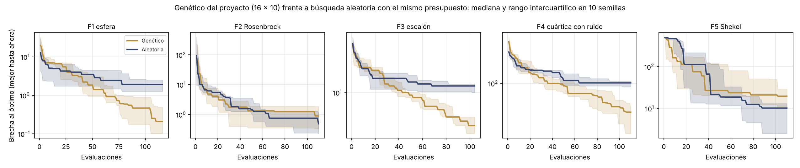

Validación del algoritmo genético con las funciones de De Jong#
Por qué hace falta#
El algoritmo genético es uno de los cuatro métodos de búsqueda de hiperparámetros del proyecto. En los datos de crédito no se puede saber si está bien configurado, porque el mejor F1 posible es desconocido. Además, en las curvas anytime el genético no superó a la búsqueda aleatoria.
Para saber si eso es un defecto de la implementación o una propiedad del problema, se probó el mismo genético en las cinco funciones clásicas de De Jong [DJ75]. Su mínimo es conocido, así que se puede medir qué tan cerca llega cada método. Este estudio no cambia ningún modelo ni ningún resultado de la validación anidada: solo evalúa el optimizador.
Diseño#
El mismo genético.
src/dejong.pyaplica los mismos operadores desrc/optimization.pycon la misma configuración:inicialización uniforme;
cruce uniforme con probabilidad 0.6 por pareja;
mutación gaussiana con probabilidad 0.3 por individuo y 0.2 por gen;
torneo de tamaño 3;
élite de 2;
16 individuos y 10 generaciones.
Solo cambia la aptitud, que es \(-f(\mathbf x)\) porque el genético maximiza.
Las cinco funciones de De Jong. Todas se minimizan:
Función |
Dimensión |
Dominio |
Mínimo |
Qué pone a prueba |
|---|---|---|---|---|
F1 esfera, \(\sum x_i^2\) |
3 |
\([-5.12, 5.12]\) |
0 |
Convergencia en una función suave y convexa |
F2 Rosenbrock, \(100(x_1^2-x_2)^2+(1-x_1)^2\) |
2 |
\([-2.048, 2.048]\) |
0 |
Valle curvo y estrecho |
F3 escalón, \(\sum \lfloor x_i \rfloor\) |
5 |
\([-5.12, 5.12]\) |
−30 |
Mesetas sin gradiente |
F4 cuártica con ruido, \(\sum i\,x_i^4+\mathcal N(0,1)\) |
30 |
\([-1.28, 1.28]\) |
0 |
Alta dimensión con evaluaciones ruidosas |
F5 zorreras de Shekel |
2 |
\([-65.536, 65.536]\) |
0.998 |
25 mínimos locales |
Comparación justa. Con cada semilla, la búsqueda aleatoria recibe exactamente el mismo número de evaluaciones que usó el genético. Con el presupuesto del proyecto son unas 120 evaluaciones, porque los hijos que no cambian no se vuelven a evaluar.
Repeticiones. Se usan 10 semillas. Se repite todo con un presupuesto amplio, 50 individuos × 50 generaciones (unas 1,780 evaluaciones), para separar la calidad del algoritmo de la escasez de presupuesto.
Pruebas unitarias.
tests/test_dejong.pyse ejecuta en cada push. Verifica:los mínimos conocidos;
que el genético converge en la esfera con presupuesto amplio;
que el mejor valor nunca empeora, gracias al elitismo;
que supera a la búsqueda aleatoria en la esfera con el presupuesto del proyecto;
que es reproducible con la misma semilla.
Resultados#
Función |
Mínimo |
Genético 16 × 10 |
Aleatoria (mismas evaluaciones) |
Gana el genético |
Genético 50 × 50 |
Aleatoria (mismas evaluaciones) |
Gana el genético |
|---|---|---|---|---|---|---|---|
F1 esfera (n = 3) |
0 |
0.211 |
1.912 |
10 / 10 |
0.001 |
0.369 |
10 / 10 |
F2 Rosenbrock (n = 2) |
0 |
0.900 |
0.488 |
4 / 10 |
0.053 |
0.027 |
4 / 10 |
F3 escalón (n = 5) |
−30 |
−25.5 |
−18.5 |
10 / 10 |
−30.0 |
−22.5 |
10 / 10 |
F4 cuártica con ruido (n = 30) |
0 |
44.4 |
101.1 |
10 / 10 |
1.43 |
66.5 |
10 / 10 |
F5 Shekel (n = 2) |
0.998 |
20.70 |
11.21 |
3 / 10 |
0.999 |
2.231 |
8 / 10 |


Fig. 1 Brecha al óptimo del mejor valor encontrado hasta cada evaluación, con el presupuesto del proyecto. Las líneas son la mediana de 10 semillas y las bandas, el rango intercuartílico. El eje vertical está en escala logarítmica simétrica.#
Interpretación#
La implementación es correcta. Con presupuesto amplio, el genético encuentra el mínimo exacto de la esfera (0.001) y del escalón (−30) y llega al mínimo global de Shekel (0.999 frente a 0.998), pese a sus 25 mínimos locales. En la cuártica de 30 dimensiones con ruido baja de 101 a 1.4, mientras la búsqueda aleatoria se queda en 66.
Con el presupuesto del proyecto, la ventaja depende de la dimensión. En las funciones de 3, 5 y 30 variables, el genético gana en las 10 semillas. En las de 2 variables (Rosenbrock y Shekel), la búsqueda aleatoria es igual o mejor: con unas 115 evaluaciones cubre bien un plano, y el genético todavía no ha explotado lo que encontró. En Rosenbrock pierde incluso con presupuesto amplio: la mutación gaussiana, con una desviación del 15 % del rango, es demasiado gruesa para seguir un valle estrecho.
Esto explica lo que se vio con los datos de crédito. Los espacios de hiperparámetros del proyecto tienen entre 2 y 6 dimensiones, y el F1 cambia muy poco dentro de una región amplia de buenas configuraciones (la diferencia entre métodos fue menor que la variación entre pliegues). Es justo el caso en que la búsqueda aleatoria es muy competitiva [BB12]. Que el genético no la superara no indica un error de implementación: con unas 120 evaluaciones y pocas dimensiones, explorar al azar rinde tanto como evolucionar.
Limitación. Las funciones de De Jong son continuas, mientras que algunos hiperparámetros son enteros o categóricos. Aquí solo se prueban los operadores para variables continuas. Los de enteros comparten la mutación gaussiana y la redondean; los categóricos no se prueban.
Se reproduce con python -m src.dejong (unos 2 minutos).